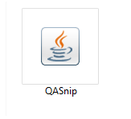
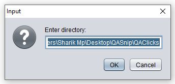
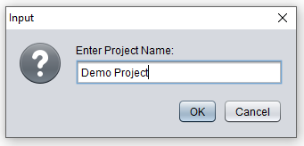
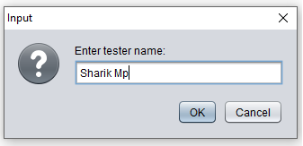
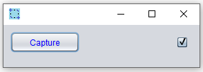
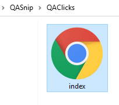

QA Snip
While executing test cases manually, we generally use excel for recording execution status of the test cases and a word file for keeping track of screenshots.
With large number of test cases it becomes quit difficult to keep track of screenshots for all the test cases. It's also very difficult to refer those screenshots later on.
This java tool overcomes the problem. Coded in java swing, the application with one click performs the following:
1. It takes screenshot of the current screen.
2. Saves the screenshot to user defined directory. (This directory is taken as input when the tool starts)
3. Copies screenshot path to clipboard. Tester can directly paste the screenshot path in excel sheet against a particular test case or test step.
4. Creates an html file to view all the screenshots present in the directory.
Steps to use the application:
Step 1: Double click on the
jar to start the application.

Step 2: Enter valid directory for saving screenshots.

Step 3: Enter your project name (Project name will reflect in html file).

Step 4: Enter tester name (It will also reflect in html file).

Step 5: Untick the checkbox if you don't want to give description to the screenshot.

Step 6: Take few screenshots. Open the directory (provided in step 2) and view the screenshots via "index.html" file.

Thus, we saved all the screenshots at one place and created a
Html file for viewing those.